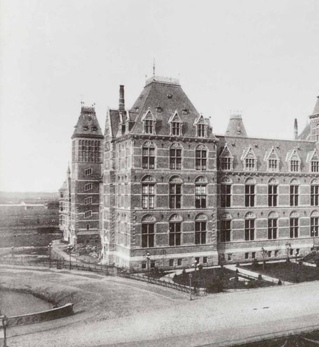

This section is focused on the architectural features of the North East side of the museum
On the media below we can obserb two pictures of the North-East side of the museum in 1880. The comparison of the building in the image from 1880 to the 360 embedded image it is clear that the Dutch wanted to conserve the architectural design on the outside by keeping all the fundamental features intact
The Atrium is a large entrance area, publicly accessible, created by covering two internal courtyards, encircled by the Cuypers’ brick buildings, and connected to one another by a gently-sloped tunnel, located underneath the main access passage.
The space conceived by Cruz y Ortiz copes with the imposing Gothic architecture of the old palace by juxtaposing clearly-contemporary elements to it so to establish a coherent visual and functional framework, where old and new can coexist.

This section is focused on the architectural history around the Night Watch paiting
To obserb the architectual changes that have been taken into place in history around the Night watch painting belwo you can see three samples of how the room changed throughout the years.
In todays Night Watch gallery it is very important to obserb the addition of the features on the ceiling. This addition was made to remark the importance of the room by using the golden color to represent and show passionm courage and create great illumination to improve the visitors experience when viewing the Night Watch painting by Rembrandt.


The Gallery of Honour of the RIjks Museum is one of the most important galleries in the museum due to the exposure of art pieces such as the Threatened Swan, the Milkmaid, the Merry Family and many more.
Below you can see on the left an image of the Gallery from 1917.To the right there is an image of how the gallery looked like back in 1984. Here it can be observed the different styles this gallery has held throughout its history.


This section is focused on the architectural features of the North East side of the museum
In the South West side if the museum it occurs the same thing as for the north east side, there has been no changes throughout history. This is a very important aspect that the Dutch find it fundamental to keep the historical monuments such as Rijks Muesum intect from the past due to their desire to emphasize on the history this museum has experienced

The Great Hall is the one of the most beautiful galleries in the museum and this is due to the art pieces the walls and the glasses have.
The Great Hall is a very incredible gallery due to the walls are decorated with large wall paintings celebrating Dutch history and art. One of them is covered with large stained glass windows with depictions of famous, mostly Dutch artists.
It may be observed that the changes experieced from this gallery compared to the how it was back in 1920 (image on the right) is the removal of the states. According to our understanding this change was implemented for the visitors better view of the most important art pieces this gallery holds and allow the visitor to look at them with a better angle.

The Cuypers Library, the largest historical library in the Netherlands has been beautifully restored and visitors can see the 19th century reading room on level 1.
Below it may be observed the Cuypers Library on level 1 which is one of the most historically important libraries in Dutch history.